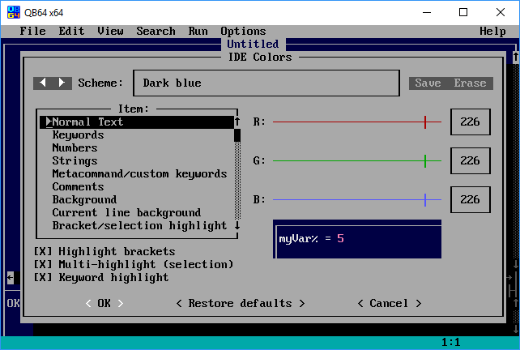
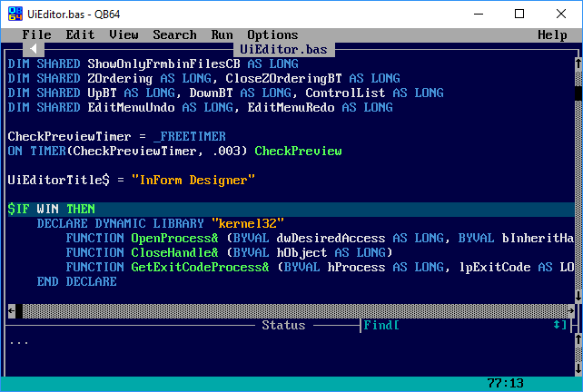

Home • Forums • News • GitHub • Wiki • Samples • InForm • GX • QBjs • Community • More…

Our forums have returned, check them out here!
Get QB64
Please select the correct package for your OS.
Version 2.1
Please download the correct package for your operating system.
| Operating System | Package |
|---|---|
| Windows x64 | Download |
| Windows x86/32-bit | See below. |
| Linux | Download |
| macOS | Download |
Windows x86/32-bit: Due to an error during the build process, the 32-bit build of QB64 v2.1 is not available; however, this issue is confirmed to be fixed with the next release (v2.1.1). We apologize for the inconvenience this may have caused and ask for your understanding as we continue to iron out the finer details related to the overall release process.
NOTE: For additional instructions on how to setup/configure, please visit the source repo.
Introduction
How BASIC made its way into the 21st century

The BASIC language has been the gateway into programming for countless people. Popular as a beginner programming language in the 80’s and evolving into a powerful professional tool in 90’s, BASIC (and its successor QBasic), helped many people develop a love for programming. These languages provided the foundational learning platform for most of today’s professional developers.

The QB64 project has evolved over the last decade to bring the magic and educational potential of BASIC from its 20th century roots into the modern era. The QB64 project is already in use in both educational and professional contexts and has an active and helpful user community.
Unlike traditional BASIC and QBasic code, QB64 gets compiled automatically into machine code – allowing exceptional performance, easy distribution, and the ability to link with external C and C++ programming libaries. Compatible with most QBasic 4.5 code, QB64 adds a number of extensions, such as OpenGL and other modern features, providing the perfect blend of classic and modern program development.
QB64 is available for all recent Windows, Linux, and macOS versions.
Who created QB64?
For some of the early history of QB64, check out these interviews.
Additional/Complementary Tools
There are several people in the community with projects that serve to compliment QB64; extending the reach and capability of the QB64 developer.
- InForm: Rapid Application Development (GUI) for QB64.
- GX: A game engine for QB64 that also allows you to extend your reach to the web.
- QBjs: An implementation of the BASIC programming language for the web, with multimedia support and easy sharing of programs that aims compatibility with QBasic, QB4.5 and QB64.
- QB64 Interpreter: Run QB64 commands on the fly or load a file and run it, no compilation required - written in QB64.
- L-BASIC: The L-BASIC compiler and interpreter implemented in QB64. There is also this forum thread for some interesting background on the project.
- Roslyn: Open-source MIT-licensed implementation of latest direct “commercial” decendant of QBasic/QB4.5 that targets the .NET platform.
- PC-BASIC: Free, cross-platform emulator for the GW-BASIC family of interpreters.
What is InForm?

InForm is a Rapid Application Development tool for QB64. It consists of a library of graphical routines and a WYSIWYG editor that allows you to design forms and export the resulting code to generate an event-driven QB64 program.
Want to build graphical UI applications across Windows, Linux and/or Mac? Check out InForm!
What is GX?
GX is a basic game engine… literally. This is a Game(G) Engine(X) built with and for QB64, a QBasic/QuickBASIC IDE and compiler with modern extensions. GX supports basic 2D gaming: platformer, top-down, etc.; you know, classic NES/SNES type games.
Interested in extending your QB64 reach to the web? Check out GX.
What is QBjs?
QBjs can be considered a sort of sister project of QB64. It is heavily inspired by folks that have a huge appreciation for QB64 and the main developer that is working on this is “simply” continuing forward on a project that originally grew out of a pet project of his for QB64. This (previous) project, written in QB64, allows you to write your code in QB64 and then “convert” it to Javascript. The QBjs project is taking this further by providing the necessary tools to write your code in the browser directly.
Interested in playing with QBasic/QB64 in the browser? Check out QBjs.
What is QB64 Interpreter?
Run QB64 commands on the fly or load a file and run it, no compilation required. Written in QB64! Check it out at QB64 Interpreter.
What is L-BASIC?
L-BASIC is a new BASIC language and compiler; a language variant that is reasonably close to QB64. However, it doesn’t attempt to be 100% compatibile; willing to break compatibility with programs from 1985 when needed. What makes this project interesting is that not only is it written in QB64, but it serves to explore ideas that “could be”. This isn’t to suggest that what L-BASIC is doing will make it’s way into QB64, but it does serve as an interesting thought experiment and visible example of what you could do if you desired to start with QB64 and “make it your own”. Check it out at L-BASIC.
What is Roslyn?
Although a bit controversial to include this on this list, Roslyn notably includes self-hosting versions of the Visual Basic for .NET compiler – a compiler written in the language itself. The compiler is available via the traditional command-line programs but also as APIs available natively from within .NET code. Roslyn exposes modules for syntactic (lexical) analysis of code, semantic analysis, dynamic compilation to CIL, and code emission. This project was started in 2010, made open source in 2014 (Apache License 2.0) and released first version in Visual Studio 2015. At some point the license was transitioned to use the same license as .NET (MIT-licensed). You can either work with this directly from command-line tools via .NET or by installing the Community Edition (Free) of Visual Studio. It is included in this list as a lot of the skills / foundation gained by working in QB64 can easily applied to VB and the scope of what can be done with .NET is pretty impressive.
What is PC-BASIC?
PC-BASIC: Free, cross-platform emulator for the GW-BASIC family of interpreters that allows you to run classic games and legacy BASIC applications designed for MS-DOS systems, IBM PC, PCjr or Tandy 1000. PC-BASIC aims for “bug-for-bug compatibility with Microsoft GW-BASIC”. In other words, it has a very similar mission to QB64, but instead of QBasic and/or QB4.5 compatibility PC-BASIC is focused on the BASIC that was prior to QBasic/QB4.5 (GW-BASIC) and is an excellent alternative/replacement to GW-BASIC on modern platforms. Because of this, it might be able to execute line-number BASIC programs that aren’t compatible with QBasic, QB4.5 and QB64.
FAQ
What about the qb64.net website/domain?
Please make note that the .net domain for QB64 is highly suspect. Apparently the story goes that someone forgot to renew the domain name and it was snipped by a questionable party that subsequently mirrored the previous websites information and spammed it with dubious advertising. At this point it has nothing to do with QB64 and, ultimately, should be completely avoided given that the content could contain suspect binaries potentially containing malware. Additionally, it’s been stated in the community has potentially having malware as part of the site - potentially infecting your machine by simply browsing to it. So, in the end, if you do venture there be sure to exercise caution.